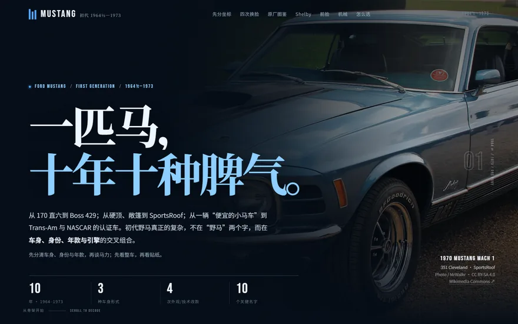
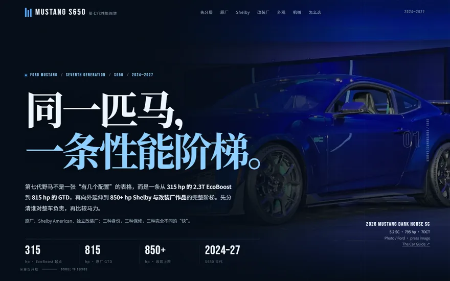

Mustang 图鉴 · 七代全谱系
同一匹马，七次换骨（在新标签页打开）
从 Falcon 底盘的 1964½ 到数字座舱的 S650：平台、外观、动力，以及 Mach 1、Boss、Cobra、Shelby 等名字的迁徙。
3.8 MB · 1964½–2026
WORKS · 3790
三份中文 Mustang 图解长页，两个在浏览器本地运行的 Rust 应用。无需安装、无需登录，也不依赖服务端；原有页面与成品保持原样。
共 6 个入口；其中 WebGPU 入口需兼容浏览器。Rust 应用 loading-fix-r1 已在本环境通过公网冷启动。
01 / WEB PAGES
三份独立的中文图解长页，图片、字体与脚本全部内嵌在单一 HTML 中；入口保持原文件名，直接打开。
Mustang 图鉴 · 七代全谱系
从 Falcon 底盘的 1964½ 到数字座舱的 S650：平台、外观、动力，以及 Mach 1、Boss、Cobra、Shelby 等名字的迁徙。

Mustang 图鉴 · 初代 1964½–1973
三种车身、四次改款，GT、Mach 1、Boss、Shelby、Grande、GT-CS 与地区特别版，附带前脸与机械拆解。

Mustang 图鉴 · S650 2024–2027
从 315 hp 的 2.3T EcoBoost 到 815 hp 的 GTD，再延伸到 Shelby American 与 Roush、Saleen、Steeda、Hennessey 的改装作品。
02 / RUST APPS
由 Rust 编译为 WebAssembly，在浏览器本地运行。每个入口独立打开，首次载入需要下载对应运行时。
Rust 三维球体预览
由 Rust 与 wgpu 编译到 WebAssembly 的球体纹理预览：左拖旋转、滚轮缩放、右拖平移，两个显式 GPU 入口分别打开。
此前公网首次加载存在 WASM 下载超时；loading-fix-r1 已在 Edge 155 / Firefox 157 本环境冷启动通过，WebGPU 仍条件可用。
首次打开需下载约 9 MB WASM；相机操作不保存，刷新即复位。图片导入与 PNG 导出在此版本禁用。
Rust 内存态配钞演示
由 Rust 与 eframe/glow 编译到浏览器本地运行的配钞演示：设定目标金额，计算面额、整包与处理单元，结果只存在内存中。
此前公网首次加载存在 10 秒 WASM 下载超时；loading-fix-r1 已在 Edge 155 / Firefox 157 本环境冷启动通过。
首次打开需下载约 11 MB WASM；不写盘、不保存，刷新回到初始库存。仅供演示，请勿用于真实库存。
Rust 应用为桌面浏览器界面，主页的窄屏适配不代表应用支持手机或触控；WebGPU 入口仅在支持的浏览器中可用。loading-fix-r1 已在本环境通过公网冷启动，此前的 10 秒 WASM 下载超时不再出现。
03 / NOTES
本站只做入口与整理，不接管原作品的界面。所有项目文件按原样发布。
网页与 Rust 浏览器成品按原字节复制到发布目录，只在目录与链接层接入。没有改写、压缩、注入脚本或替换主题，也没有给原页面添加返回按钮。
主页与网页作品是普通静态文件；Rust 应用由 WebAssembly 在浏览器本地运行，不需要安装客户端或启动服务端。
项目入口在新标签页打开。Rust 应用是桌面浏览器界面，窄屏与触控尚未验证；WebGPU 入口仅在支持的浏览器中可用。loading-fix-r1 已在本环境通过公网冷启动，此前的 10 秒 WASM 下载超时不再出现。